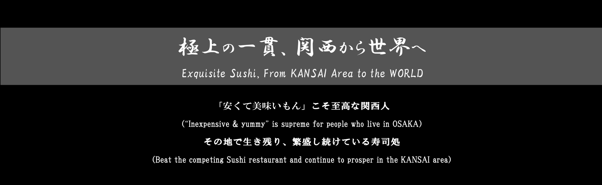

「寿司」は日本食文化を象徴する代表的な料理の一つであることは言うまでもない。一般的に「寿司」と耳にすると思い浮かぶのは「握り寿司」だろうが、「寿司」の種類は大きく分けて握り・軍艦・巻・押し・ちらしの5つに分類される。巻寿司は海苔で具材を巻いた形態で手軽に食べることができるため、家庭でも「手巻き寿司」や節分の「恵方巻」として振る舞われることもしばしばあるだろう。
「寿司」は言わずもがな、その鮮度と素材の良さがクオリティを大きく左右する。料理人は魚の選定に非常に慎重を期し、適切なタイミングで仕入れることが重要である。仕入れた当日の鮮度が旨味の直結するものもあれば、数日間寝かせたり、昆布締めなど施すことにより身や旨味が凝縮されるものもある。また、寿司はその味だけでなく、見た目にも美しさが求められる。板前は握る際に手の温度や力加減、水分量に配慮し、ネタの大きさとシャリのバランスを考慮したうえで、素材の味を最大限に引き立てるように工夫を凝らす。そのため、「寿司」は単なる料理ではなく、一種の芸術性を帯びた作品とも言える。
「寿司」は、海外でも多くの寿司屋が見られるほど世界中で人気な食べ物の一つとなっている。ここでは、老若男女・国内外を問わず様々な人々が気軽に足を運ぶことができる、関西圏の誇る最強寿司屋を5つ紹介しよう。

春駒
大阪屈指の飲み屋街である天満に位置する、コスパ最強江戸前寿司
大興寿司
キタ・ミナミに次ぐ繁華街である天王寺エリアで、3貫150円から

どでか寿司
店名通りの大盤振る舞いに留まらず、そのクオリティも一級品
仙石すし
名古屋屈指の最強寿司屋、「仙石すし」がここにある
にぎり長次郎
関西を中心に店舗展開しており、高級廻転寿司として名高い
その他の寿司処
日本寿司名店録（北海道・石川・福井・福岡）
春駒
大阪駅から、大阪環状線（外回り）で一駅の天満駅にある江戸前寿司屋『春駒』。多くの寿司屋が立ち並ぶ天満エリアで本店・支店を問わず終日、大行列を成す同エリアNo.1の寿司屋である。
メニューの種類は圧巻の100種以上であり、どの寿司ネタもサイズが大きく食べ応えもある。また、本店の名物である「あさりの赤出汁」はビッグサイズのあさりがゴロゴロ入っており、売り切れ御免の人気サイドメニューとなっている。ランチタイムの盛況具合では、本店・支店問わずディナー帯になると寿司ネタが完売続出となることもある。大阪最強とも呼べる『春駒』、是非とも早い時間に訪れていただきたい。
おしながき
大興寿司
梅田のキタエリア、難波のミナミエリアに次ぐ繁華街である天王寺エリアに『大興寿司』は店を構える。職人が握る寿司を堪能でき、マグロが３貫１５０円からという某回転寿司チェーン店も驚愕する圧巻のコスパである。看板のメニューが定期的に更新されており、訪れる度に異なる握りを楽しめることも魅力的だ。
寿司だけではなく、「馬刺し」や「うなぎの肝」、立派な鯛のあら煮である「かぶと煮」などのサイドメニューが豊富であり、数十種類もの用意がある。
おしながき
どでか寿司
大阪駅から谷町線で一駅の南森町に店を構えている『どでか寿司』。ここは店名の通り、寿司の大きさを売りとしている。単にサイズが大きいだけでなく、鯛や鰯など、ものによってはネタを2枚重ねにして握るという太っ腹さには衝撃だ。握りに加え、巻物も当然ビッグサイズであり、納豆巻などでさえ太巻きとも思えるような大きさで提供されるというように、どのメニューを選んでも満足感を得られること間違いないだろう。
店内は分煙となっているほか、大人数の歓送迎会なども受け付けているので、多種多様なシチュエーションで利用可能だ。
おしながき
仙石すし
主要関西圏から新幹線でおよそ50分、名古屋にもコスパ最強な老舗寿司屋が存在する。名駅から徒歩5分の好立地に『仙石すし』はある。ディナー時間はもちろんのこと、ランチ帯には圧巻リュームでSNS映えな海鮮丼を求めて、現在では全国から多くの客が足を運ぶようになった。
ランチ帯で最も人気なメニューは「季節のスペシャルランチ海鮮丼」である。日によって異なる新鮮なおすすめ鮮魚が約8種も盛り込まれた逸品である。ここでは主に、有名なランチメニューを紹介したい。
おしながき
にぎり長次郎
主に関西圏で廻転寿司として事業展開しているチェーン店だが、カウンターだけの寿司屋に引けを取らないクオリティである。看板メニューの「本マグロ三昧」や、注文後に生簀から取り出して調理する「泳がし鯵」や「活アワビ」は新鮮さ抜群である。レギュラーメニューに加え、季節メニューが定期的に更新されるため、時には「赤貝」や「車海老」、「ボタン海老」といった高級ネタもメニュー表に名を連ねる。
また、節分やひな祭りなどのイベントに即した商品や、店舗限定で季節会席も取り扱っており、さまざまな場面で利用できる。サイドメニューやデザートメニューも季節ごとに変更となるため、一年を通して様々な料理を愉しむことができる。
おしながき
※廻転寿司CHOJIRO・にぎり長次郎 西京極店は一部別メニュー※
※火 定休日。いずれも、ネタが無くなり次第終了。
※本店：木 定休日、南店：木 通常営業
※日祝 定休日
※月 定休日